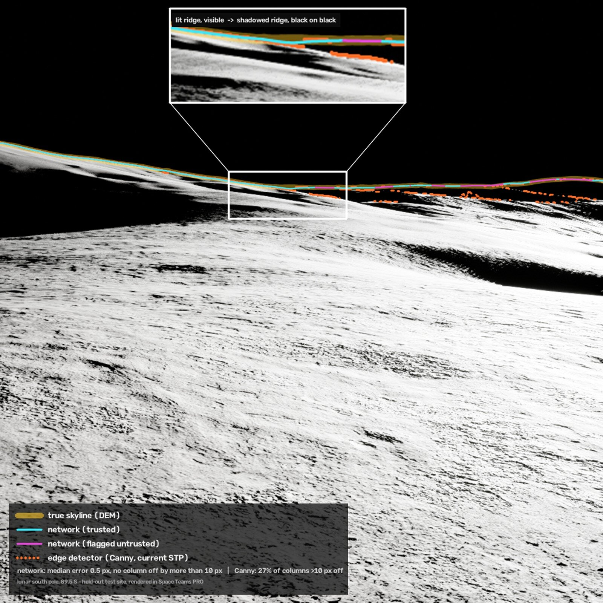
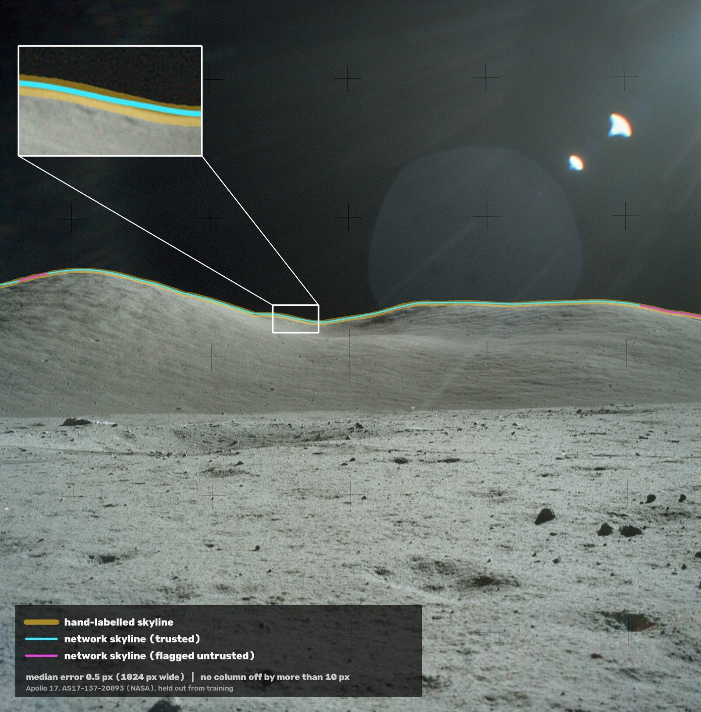
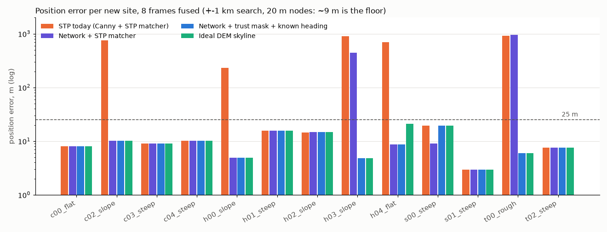

Lost-in-space localization on the lunar surface compares the skyline a camera sees against skylines predicted from a digital elevation map across a grid of candidate positions. Near the south pole the sun sits within a few degrees of the horizon, so long shadows cross the terrain and an edge detector can read a shadow boundary on the ground as the skyline. This project replaces that detector with a network that predicts the skyline in each image column along with whether that column can be trusted, so localization only uses the columns the network is confident in. A shadow segmentation head trained alongside it, separating sky, lit terrain, cast shadow, and self shadow, shapes the network's features toward exactly that failure.
The work runs out of Texas A&M's ASTRO Center with NASA JSC and is delivered inside SpaceTeamsPRO. I own the shadow detection and segmentation network and co-develop the horizon and shadow navigation algorithms with the JSC team. The abstract is accepted for an oral presentation at SpaceOps 2027.
On 33 held-out Apollo 17 Hasselblad photos, a model trained only on SpaceTeamsPRO renders placed every horizon column within 10 px of truth, with a median error of 0.6 px. Getting there meant breaking a habit the network had picked up from simulation. Every training render came from a mast camera tilted slightly down, so it had learned that the skyline always sits high in the frame, and level-held photos broke it. Shifting the training images and adding sensor-style noise to the sky fixed both.

Localization results are preliminary. Along two survey lines at Nobile Rim 2, fusing six headings per position put 53 of 59 positions within 25 m, against 27 for the old SurfaceOperations method of Canny edges and slope matching. Nearly all remaining misses came from looking toward the sun, where slopes facing the camera sit in their own shadow and the skyline is black on black. The network flags those columns as untrusted instead of passing them to the matcher.
